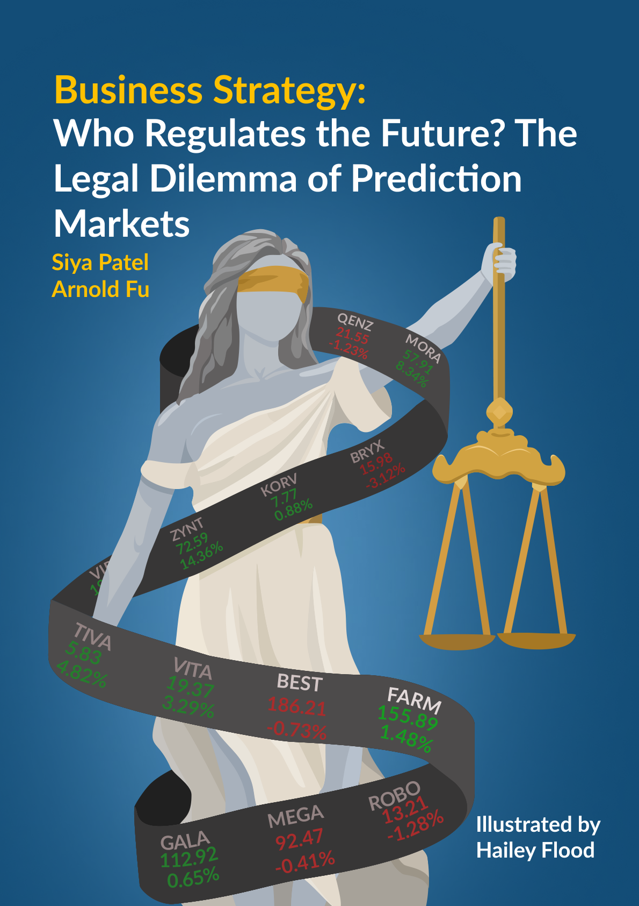
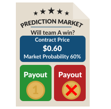
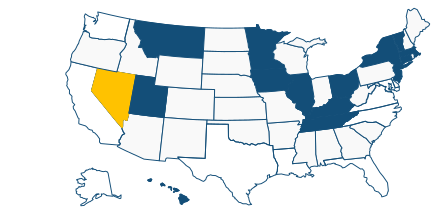

By Siya Patel, Arnold Fu | Illustrated by Hailey Flood | Winter 2026 Issue | Business Strategy

Prediction markets, gone from the days of being an obscure, scientific instrument or a source of informal bets, have exploded into the forefront of the world’s financial markets. Offering bets and wagers on every topic under the sun, from how many rebounds LeBron James will catch in the next game, whether a war will break out, to the fate of the U.S. midterms, are all up for grabs on this newfound frontier of market exploration and exploitation. Providing an alternative to traditional financial markets, the disruption of these prediction markets have already incited calls for regulation.
As prediction markets have gained an insidious reputation for skirting around gambling laws by being legally classified as financial derivatives, many U.S. state governments, from Nevada to Michigan to Massachusetts, have declared their intention to reclassify prediction markets to close this loophole. Against them are the CFTC and the Trump administration, who seem all too eager to dig their heels in and settle down for legal warfare against the country. With no sign of stopping, this battle will likely escalate across the circuit courts of America and all the way to the Supreme Court.
Amid this growing clash, the question of how prediction markets should be regulated has become unavoidable. The tension between federal oversight, tasked with ensuring market integrity, and state authority, responsible for protecting consumers and collecting taxes, highlights a regulatory gap that no single approach seems able to fill. With markets spanning sports, politics, and global events, and with both centralized and decentralized platforms challenging traditional financial frameworks, the future of these markets hint at the potential need for a hybrid system – one that could balance federal and state powers while allowing these markets to operate safely and transparently.
Understanding Prediction Markets
Prediction markets operate through event contracts. Users purchase a contract that pays a fixed amount if a specified event occurs and nothing if it doesn’t. For example, a contract might pay one dollar if a particular team wins the championship or if a candidate wins an election. These contracts are typically priced between zero and one dollar, representing the market’s probability estimate that the event will occur. If a contract is trading at sixty cents, the market is effectively saying there is a sixty percent chance of that outcome. Traders can buy contracts they believe are undervalued or sell and short contracts they believe are overpriced, correcting the price using probabilistic arbitrage.

Markets at Play
The two most famous prediction markets, Kalshi and Polymarket skyrocketed to fame with the 2024 election of President Trump. While many pollsters and pundits declared the race too difficult to call or even a slight Harris lead, the bets of these prediction markets accurately predicted the fate of the election [1], along with several battleground states [2]. Having entered the public mainstream, the market shares of these two titans have exploded, accounting for 97.5% of bets made by volume [3]. This growth has gone neither unnoticed nor unenvied as other companies like CME Group, Coinbase, Robinhood, and FanDuel are rushing to create their own prediction markets [4]. Kalshi became the first platform in the U.S. to secure a Designated Contract Market (DCM) license in 2020 by the CFTC, giving it the same legal status as traditional U.S. futures exchanges. It has developed a company brand emphasizing full compliance with U.S. laws and regulatory standards and advertises itself as such [5]. By contrast, Polymarket initially operated as a decentralized, crypto‑native market that had been banned from the United States for several years for violating Know Your Customer laws meant to prevent money laundering and other criminal activity. Polymarket has since been allowed to return to the U.S. and follow the same regulations as Kalshi [6]. The ideological differences between these two companies, on whether prediction markets should cooperate or skirt around regulation, have led the two to become increasingly bitter during recent developments [7].
Insider Trading
By far, the most well-known controversy of these markets is the practice of insider trading, where insiders can profit before the rest of the market learns what’s happening. These have hit mainstream attention, with suspicious traders making hundreds of thousands of dollars just before classified events are publicized, such
as the capture of Venezuelan President Maduro [8] and U.S. strikes into Iran [9]. Several countries have proposed new laws to prevent government officials from using prediction markets, including the United States [10], and the CFTC has raised the spectre of regulation to prevent insider trading [22]. Several arrests for people performing insider trading on prediction markets have already been enacted, most notably against two Israelis using classified information [11] and an editor for MrBeast [12]. Some founders and academics have seemingly supported the use of insider trading, arguing it helps the market reach an accurate prediction faster, to greater controversy [13].
Sports Betting
However, equally concerning is how subtly these markets have tapped into the sports betting markets, with over 90% of Kalshi’s growth in 2025 consisting of sports betting. Kalshi has doubled its share of the sports gambling market from 1.5% to 3% with risky expansions into complicated and nontraditional bets, and over $1 billion of event contracts were bought with the outcome of the Super Bowl [14]. However, while sports gambling is regulated by the states, prediction markets continue to insist their sports betting is not equivalent and thus only answers to federal commodities law.
Congress is unlikely to act decisively on prediction markets, as legislative responses to emerging financial technologies have historically been slow and inconsistent. The issue also intersects with several politically sensitive debates – such as gambling regulation, financial innovation, and election integrity – making it difficult for either party to adopt a clear or unified position. As a result, any congressional response would be unpredictable and likely fragmented across committees and interests. Still, some congressional actions have been taken to prevent insider trading within prediction markets.
Lastly, it is also worth noting that President Trump and his family hold several connections and potential conflicts of interest with prediction markets. Namely, Truth Social, the social media platform founded and majority-owned by Trump, has planned its own prediction market called Truth Predict. Additionally, Donald Trump Jr. is a strategic advisor to both Kalshi and Polymarket and his venture capital firm has invested in the latter [21].
Legal Basis
The federal government’s regulatory view is that many prediction-market event contracts are financial derivatives and therefore fall within the exclusive jurisdiction of the Commodity Futures Trading Commission (CFTC) under the Commodity Exchange Act (CEA) [15]. The CFTC and its chair, Michael Selig, have repeatedly stated their intention to defend their authority over these markets [16] from state litigation as they have abandoned previous legal battles, laid out initial guidance and started drafting permanent policies in a reversal from the previous administration [17].
By contrast, a growing number of state officials and courts have concluded that some event contracts, especially those that closely resemble sports bets or simple wagers on elections and other local matters act like gambling instruments and therefore should be treated under state gambling and consumer-protection statutes [18]. As federal law triumphs over state law, every state government wishing to implement their own regulations must prove that event contracts behave too differently to fall under the CEA. This question, on the definition of event contracts, is the legal problem at the heart of the war we now find ourselves in.
The Legal War

The grand battle between the states and federal government are slowly building up their forces as they spar over social media and TV channels. Selig has published an oped in the Wall Street Journal [19] and has defied a letter from just under two dozen Democratic senators pleading against CFTC involvement in ongoing court cases. Meanwhile, many of Selig’s opponents have declared that prediction markets are illegal and synonymous with gambling on all their platforms, including Republican Utah Governor Cox, former Republican New Jersey Governor Chris Christie and former White House chief of staff to President Trump, Mick Mulvaney. The opposition to prediction markets has become one of the most bipartisan views in all of Congress [20].
Legally, several states are discussing bills and have even passed laws regulating prediction markets from the perspective of gambling. The first state to pass a law restricting prediction markets was Montana in October 2025, which classified prediction markets as gambling, but has since been joined by Utah in February 2026, which has made it a felony to run or advertise unlicensed sites. Additionally, states also have legislation on the books with bills ranging from full state bans in Hawaii and Vermont, to gambling safeguards and advertising restrictions in Illinois and Connecticut, to requiring a license to operate in New Jersey, New York, and Minnesota. Other states with bills in progress, with varying regulations, include Iowa and Kentucky [21].
Eleven states have issued cease-and-desist orders against prediction markets, citing unlicensed sports gambling under preexisting laws. States leading the opposition include Nevada, Massachusetts, Illinois, Ohio and T ennessee, with over 20 active court cases challenging the platforms' legality [18] [22]. Appeals and injunctions have also been filed by both the states, the federal government, and the prediction markets themselves as they refuse to back down [21].
The Battles Nevada
In Nevada, the Nevada Gaming Control Board ordered a cease-and-desist letter to Kalshi in March 2025, citing state law, but Kalshi successfully won an injunction in April. However, in November, U.S. District Judge Andrew P . Gordon, would reverse his decision in November, leading to Kalshi appealing to the Ninth Circuit. The Nevada Gaming Control Board has filed a new lawsuit seeking a temporary restraining order and permanent injunction [23].
In February 2026, Kalshi requested to transfer the case to federal jurisdiction but was denied, preventing the company from operating or advertising in the state [21]. The CFTC has filed an amicus brief in the U.S. Circuit Court of Appeals to reaffirm its jurisdiction over prediction markets, representing the first time the federal government has backed prediction markets in court. A Nevada judge has upheld a ban on Kalshi's event-based prediction contracts, ruling them "indistinguishable" from gambling and requiring a preliminary injunction. The ruling forces Kalshi to implement geofencing to block Nevada users from sports, political, and economic markets, making Nevada the only state with a court-backed, active ban on such platforms.
Massachusetts
Massachusetts became the first state to directly sue Kalshi instead of ordering a cease-and-desist letter in September 2025, resulting in the case being taken up by the state superior court instead of a federal district court. Massachusetts was granted a preliminary injunction in January 2026, intent on blocking Kalshi from the state in thirty days [24]. However, before those thirty days, this victory was undone with from the Massachusetts Appeals Court in early March, which granted an emergency stay that revoked the ban as the appeal proceeds [23].
Kalshi filed a federal lawsuit in October 2025 against the Ohio Casino Control Commission and the state Attorney General after Ohio regulators issued cease‑and‑desist demands [25]. In March 2026, U.S. District Judge Sarah D. Morrison denied Kalshi’s motion for a preliminary injunction, questioning the “absurdity" of sports event contracts being considered swaps and ruled that Kalshi must follow state gaming regulations. The state was free to enforce its laws against Kalshi while the broader case continues, signalling that prediction markets were subject to state gaming rules [21].
However, the court ruling regarding the cease-and-desist letters in T ennessee reached the opposite conclusion, with U.S. District Judge Aleta T rauger arguing that event contracts are classified under the
CEA [23]. As federal law supersedes conflicting state law, the prediction markets involved in the lawsuit are likely to be governed by the federal framework, which offers a more favourable regulatory and political environment.
For the Future
With legal battles across the country, prediction markets face a set of fundamental legal challenges that will define the future of the industry. By far, the most pressing issues is classification and whether these platforms should be treated as financial derivatives under federal law or gambling products under state law. This distinction carries significant implications for jurisdiction, taxation, and the scope of permissible activity.
Closely tied to this is the question of market integrity. As participation grows, concerns around manipulation, insider trading, and the transparency of event resolution have become increasingly difficult to ignore, raising doubts about whether these markets can maintain trust while operating at scale. Finally, consumer protection remains a critical concern, particularly as retail users enter increasingly complex and high-risk markets. Issues such as disclosure requirements, the use of leverage, and safeguards against excessive losses will likely determine whether regulators view these platforms as legitimate financial tools or as predatory systems in disguise.
The legal battle over prediction markets is far from over. Even though these cases are currently in progress at the time of writing, every party - the prediction markets, the state governments, the CFTC, and the federal government - all have too much to lose in a disliked ruling and will immediately appeal to the circuit courts. The circuit courts will most likely reach different conclusions and rulings, causing the same law to be enforced differently in different parts of the country. This phenomenon, called a circuit split, makes Supreme Court intervention practically inevitable to provide a final decision on this matter. However, given how the first wave of appeals to the circuit courts has just been filed, a Supreme Court ruling is several years away and meaningfully predicting such a far-off event is impossible. Given the length of time and the possibility of delays, it is not impossible that changes in leadership, especially with the CFTC or even the White House, could alter the outcome of events.
Possible Outcome
One potential outcome is federal dominance. In this scenario, the courts would ultimately confirm that predictionmarket event contracts fall squarely within the definition of financial derivatives under the Commodity Exchange Act, placing them under the exclusive jurisdiction of the CFTC. Such a ruling would significantly limit the ability of individual states to classify these platforms as gambling or to impose their own regulatory regimes. The result would be a single, nationwide framework governing prediction markets, similar to the structure that currently exists for futures and options trading. Proponents argue that this approach would promote innovation, improve market liquidity, and provide clarity for companies seeking to operate across state lines. However, this would be a devastating loss to the states through the loss of tax revenue, the undermining of the existing gaming industry, and the loss of regulatory authority to enforce local concerns on addiction risks, advertising standards, or youth exposure that differ from the federal government.
Another outcome is state authority prevailing. In this case, courts would determine that many prediction-market contracts function more like traditional wagers than financial instruments, placing them primarily under state gambling laws. This would require platforms to obtain licenses in each jurisdiction where they wish to operate or to withdraw from states with restrictive regulatory environments. The result would be a highly fragmented market that would struggle to support a single, national market. While this approach would empower states to enforce consumer protections and align prediction markets with existing gambling frameworks, it would also stifle growth and innovation by increasing barriers to entry and siphoning liquidity from these platforms, suppressing their ability to aggregate information and make accurate predictions.
Another possibility is the emergence of a dual regulatory system, similar to how the government already regulates alcohol, cannabis, banking and other morally hazardous industries. Under this outcome, courts would recognize a role for both federal and state authorities, allowing the CFTC to oversee the financial aspects of prediction markets while preserving states’ ability to enforce certain gambling-related restrictions. Platforms operating in this environment would need to navigate a layered regulatory structure, complying with federal requirements for market integrity and reporting while also adapting to varying state-level rules on licensing, advertising, and consumer safeguards. While this approach could provide a more balanced system—combining federal oversight with localized protections—it would also introduce significant complexity. Companies might face fragmented compliance obligations, increased legal costs, and barriers to scaling their platforms nationally. At the same time, states would retain flexibility to respond to local concerns, potentially leading to a patchwork of regulations that differ in strictness and enforcement.
Conclusion
A purely federal or purely state-based system would each solve one problem while creating another, which is why a dual regulatory model is the most viable path forward. Under this framework, the Commodity Futures T rading Commission would retain primary authority over the structure and operation of prediction markets as financial instruments – setting standards for contract design, preventing manipulation and insider trading, and enforcing transparency in pricing and resolution. At the same time, states would preserve a defined role in areas where they have longstanding expertise, particularly consumer protection and gambling-related harms. This would allow states to impose targeted measures such as advertising restrictions, age verification requirements, and limits on high-risk products without undermining the national integrity of the market itself. Crucially, the division of authority would need to be clearly delineated: federal law would govern what prediction markets are and how they function, while state law would govern how they are accessed and experienced by users. This type of shared system is not unprecedented. Similar hybrid frameworks already exist in other morally sensitive industries such as alcohol and cannabis, where federal and state governments divide responsibilities to balance economic activity with public health concerns. In the case of alcohol, federal authorities regulate production standards and interstate commerce, while states control distribution, sales, and consumption rules. Cannabis follows a comparable, though more complex, model, where federal prohibition coexists with state-level legalization and regulation, allowing states to tailor policies to local preferences while still operating within broader federal constraints. Applying a similar structure to prediction markets would preserve their ability to function as national information systems while ensuring that local governments retain the tools needed to address social risks. Rather than forcing a zero-sum choice between federal efficiency and state protection, a dual model demonstrates that both can coexist in a stable and functional regulatory framework.